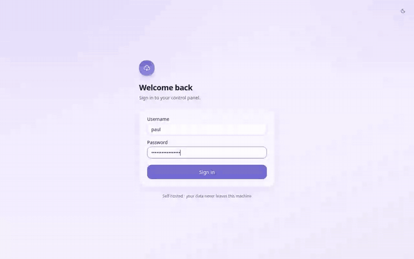

Connect Cloudflare
Paste an API token — the setup screen lists the exact scopes, so you never over-grant. Tokens are encrypted at rest with AES-256-GCM.
Open source · AGPL-3.0 · self-hosted
The dashboard creates tunnels. It does not install, start, upgrade or watch
cloudflared on the twelve boxes you actually own. puente does
— locally and over SSH, from one panel.

The gap
Their own changelog is explicit about what the dashboard covers — creating, configuring and monitoring tunnels — and what it leaves to you: connector installation, connector updates, fleet management, remote deployment. That leftover list is a person with an SSH window open, twelve times.
cloudflared on a machine you own
You do it
One click
Three steps, about two minutes
Paste an API token — the setup screen lists the exact scopes, so you never over-grant. Tokens are encrypted at rest with AES-256-GCM.
This one, or any host you can reach over SSH. puente bootstraps passwordless access, installs the connector and registers the service.
7008 → vw.example.com. Ingress rules and DNS records are
written for you, and health is live from then on.
Editions
No node cap, no route cap, no trial clock in Community — capping the thing puente exists to do would be a strange way to sell it. Pro keys are verified offline; the panel never phones home.
One admin, one Cloudflare account. Homelabs and solo operators.
Small teams sharing one panel instead of one password.
You run infrastructure for other people, in their Cloudflare accounts.
Internal platform teams with an identity provider and an auditor.
Founding licences: the first 50 customers keep 40% off for as long as they renew. Prices are per organisation, not per node. Every plan is a perpetual fallback: if you stop renewing, the version you paid for keeps running.
Straight answers
No. Unlimited nodes, unlimited routes, no clock. If puente never made a cent it would still do the job it was built for. Pro sells team and multi-client concerns, not capacity.
Running puente — for yourself, your company, or your clients — triggers nothing. The obligation only appears if you modify it and offer that modified version to other people over a network.
Never, at any edition. Licence keys are signed and verified against a public key compiled into the binary, so Pro works on an air-gapped network exactly as it does on a laptop.
Pro features go quiet after a 14-day grace period. Tunnels, routes, nodes and the CLI are AGPL code that never asks about your licence — an expired invoice cannot take an origin down.
On your machine, in ~/.puente, encrypted with AES-256-GCM.
There is no puente cloud to leak them from.
Yes — it ships in the open repository under ee/. Software
holding SSH credentials should not have a closed room in it.
Install the free edition first. If it ends up running your clients' infrastructure, you know where the Buy button is.